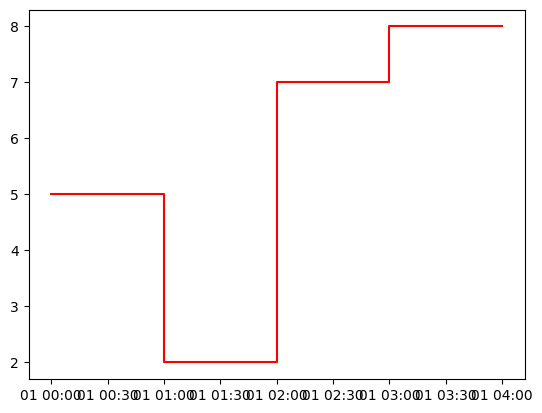

5 minutes into oemof-solph#
General information#
oemof.solph is a tool to facilitate the formulation of (mixed integer) linear problems for dispatch, unit commitment, and investmentment problems in sector-intregrated energy systems. It does so by compiling a comprehensive, graph-based description of the energy system into a linear program using Pyomo [4], [5], that can than be solved using a linear optimiser of choice.
The graph consists of three types of entities:
Buses (Type of nodes that maintain energy balance)components(Type of nodes that model technologies)Flows (directed edges with time-dependent power transport)
Mini Code example: Buses, Components (Converter, Source, Sink, but there are more), EnergySystem, Model
import oemof.solph as solph
heat_demand = [5, 2, 7, 8]
es = solph.EnergySystem(timeindex=solph.create_time_index(2023, number=4), infer_last_interval=False)
b_electricity = solph.Bus(label="electricity")
b_heat_35C = solph.Bus(label="heat 35C")
es.add(b_electricity, b_heat_35C)
electricity_grid = solph.components.Source(
label="electricity grid",
outputs={b_electricity: solph.Flow(variable_costs=0.4)}, # €/kWh
)
heat_demand = solph.components.Sink(
label="heat demand",
inputs={b_heat_35C: solph.Flow(nominal_value=1, fix=heat_demand)}, # kW
)
es.add(electricity_grid, heat_demand)
heating_rod = solph.components.Converter(
label="heating rod",
inputs={b_electricity: solph.Flow()},
outputs={b_heat_35C: solph.Flow()},
)
es.add(heating_rod)
model = solph.Model(energysystem=es)
model.solve()
/opt/hostedtoolcache/Python/3.10.13/x64/lib/python3.10/site-packages/oemof/solph/_energy_system.py:305: FutureWarning: 'H' is deprecated and will be removed in a future version, please use 'h' instead.
return pd.date_range(start, periods=number + 1, freq=f"{interval}H")
{'Problem': [{'Name': 'unknown', 'Lower bound': 8.8, 'Upper bound': 8.8, 'Number of objectives': 1, 'Number of constraints': 12, 'Number of variables': 12, 'Number of nonzeros': 0, 'Sense': 'minimize'}], 'Solver': [{'Status': 'ok', 'User time': -1.0, 'System time': 0.0, 'Wallclock time': 0.0, 'Termination condition': 'optimal', 'Termination message': 'Model was solved to optimality (subject to tolerances), and an optimal solution is available.', 'Statistics': {'Branch and bound': {'Number of bounded subproblems': None, 'Number of created subproblems': None}, 'Black box': {'Number of iterations': 0}}, 'Error rc': 0, 'Time': 0.11783313751220703}], 'Solution': [OrderedDict([('number of solutions', 0), ('number of solutions displayed', 0)])]}
import matplotlib.pyplot as plt
results = solph.processing.results(model)
heat_supply = results[(b_heat_35C, heat_demand)]["sequences"]["flow"]
plt.figure()
plt.plot(heat_supply, "r-", label="heat supply", drawstyle="steps-post")
plt.show()
